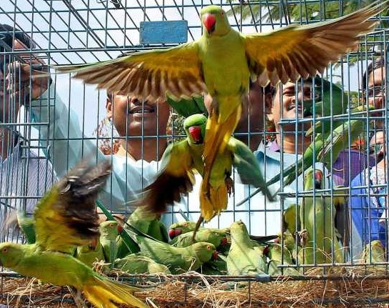
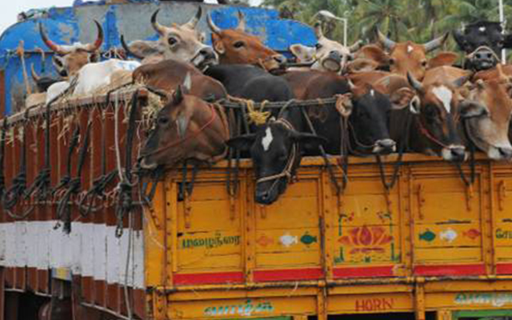
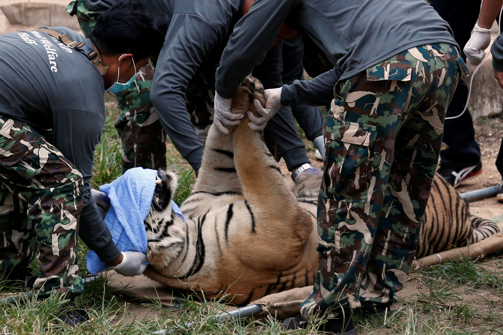
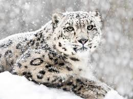

Freeing of parrots from the clutches of the so-called fake “Astrologers” or “Fortune Tellers” has been one of our most dynamic achievements intiated after looking at the immense cruelties being harped on these helpless parrots.
Rescuing Parrots From Fake Fortune Tellers
Freeing of parrots from the clutches of the so-called fake “Astrologers” or “Fortune Tellers” has been one of our most dynamic achievements intiated after looking at the immense cruelties being harped on these helpless parrots.An Alexander Baby Parrot Rescue from a Fake Fortune Teller .Our volunteer Vivek confronted the Fake Fortune Teller Person and seixing the parrot to handover to our shelter. The Parrot suffers from cage disease.Hoping for a goodand quick recovery.


Olive Ridley Sea Turtle Conservation
The olive ridley sea turtle, also known commonly as the Pacific ridley sea turtle, is a species of turtle in the family Cheloniidae. The species is the second smallest and most abundant of all sea turtles found in the world.
Stress Relief during the pandemic
The pandemic was hard not only for human beings but also for our friendly stray animals as people were scared to come out and feed strays during the pandemic. Safe Heavens set up a weekly drive where volunteers went around feeding stray animals .


Cattle Respect Programme
We have been aware of the animal welfare problems in the transport of cattle in India for many years. With the Cattle Respect Programme we have found a way to sustainably fight for a change on the ground. "Quite frankly, we were shocked. The way cattle is loaded onto trucks at shandies and transported over long distances is horrendous. The abuse takes place hidden from the Indian public and sometimes even hidden from the farmers' eyes. We have not expected to see such cruelty on such a big scale.
Tiger Protection
Project Tiger, started in 1973, is a major effort to conserve the tiger and its habitats in India.In 1970, a national ban on tiger hunting was imposed, and in 1972 the Wildlife Protection Act came into force. The framework was then set to formulate a project for tiger conservation with an ecological approach.

.jpg)
Anti-Poaching & Wildlife Trade Programme
Illegal wildlife trade and poaching has reached alarming levels over the last decade especially in regions such as South Africa, Central Africa, but also China, Vietnam and Thailand. Government action to combat this very lucrative under-cover business is often not sufficient, and the World Wide Fund for Nature has pushed the alarm button and has now undertaken a very ambitious programme to inform and to influence officials and local authorities towards a more active and effective fight against these illegal practices threatening species worldwide.
Research for Conservation Programme
Interactions between the Ladakh Urial & Livestock Interactions between Snow Leopard Prey Species & Livestock Development of Pugmark-based Population Monitoring Human-Leopard Conflict in Pune District, Maharashtra Effects of Forest Resource Extraction on Biodiversity .


Bison Restoration
Our campaign work includes: Convening meetings with local ranchers and opinion leaders to make bison restoration work for local communities and to examine what economic incentives make restoration more acceptable Conducting an outreach effort around both the state and the country to raise the visibility of the campaign Conducting an outreach effort to engage tribal members in Montana’s bison planning process by reaching them where they live, socialize, and celebrate their culture. There has been huge impact all across Montana's Indian Country, clearly demonstrated in this editorial from our outreach contractor agent, Marsha Small Protecting habitat so wildlife have a place to roam safely without running into livestock conflict through our Adopt a Wildlife Acre program, our wildlife-livestock conflict resolution programs, and our ongoing tribal lands work
Protecting Native Pollinators
North America’s native pollinators are a highly diverse group in nature, comprised of bees, butterflies, moths, and other insects, as well as hummingbirds and even bats. As pollinators, many of these animals are economically important—yet many native pollinators, due to threats like habitat loss and pesticide use, are in crisis.
Restoring Monarch Habitat
With vibrant orange-and-black wings that streak across the sky, the monarch butterfly is one of North America’s most iconic species. The impressive monarch makes a multi-generational 3,000-mile migration, traveling south to Mexico each fall and back up to Canada in the spring. West of the Rockies, the western population migrates to central and southern California each fall.